토목기사 (2017-09-23 기출문제)
1과목: 응용역학
1. 그림과 같이 강선과 동선으로 조립되어 있는 구조물에 200㎏의 하중이 작용하면 강선에 발생하는힘은? (단 강선과 동선의 단면적은 같고, 강선의 탄성계수는 2.0×106㎏/cm2, 동선의 탄성계수는 1.0×106㎏/cm2임)
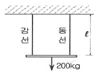
- 66.7㎏
- 133.3㎏
- 166.7㎏
- 233.3㎏
(정답률: 63%)

2. 그림과 같이 밀도가 균일하고 무게가 W인 구(球)가 마찰이 없는 두 벽만 사이에 놓여 있을 때 반력 RB의 크기는?
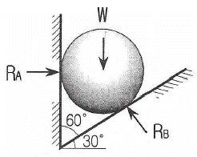
- 0.5W
- 0.577W
- 0.866W
- 1.155W
(정답률: 60%)
3. 지름 D인 원형단면보에 휨모멘트 M이 작용할 때 최대 휨응력은?
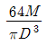
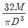
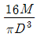
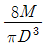
(정답률: 76%)
4. 그림과 같은 트러스에서 부재력이 0인 부재는 몇 인가?
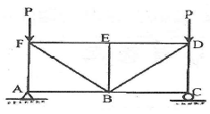
- 3개
- 4개
- 5개
- 7개
(정답률: 57%)
5. 주어진 T형 단면의 캔틸레버보에서 최대 전단 응력을 구하면?(단, T형보 단면의 I=86.8cm4이다)
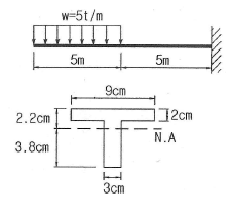
- 1256.8㎏/cm2
- 1797.2㎏/cm2
- 2079.5㎏/cm2
- 2433.2㎏/cm2
(정답률: 57%)
6. 아래 그림과 같은 연속보가 있다. B점과 C점 중간에 10t의 하중이 작용할 때 B점에서의 휨모멘트는? (단, EI는 전구간에 걸쳐 일정하다.)
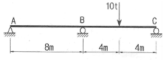
- -5 t∙m
- -7.5t∙m
- -10t∙m
- -12.5t∙m
(정답률: 55%)
7. 보의 탄성변형에서 내력이 한 일을 그 지점의 반력으로 1차 편미분한 것은 “0”이 된다는 정리는 다음 중 어느 것인가?
- 중첩의 원리
- 맥스웰베티의 상반원리
- 최소일의 원리
- 카스틸리아노의 제 1정리
(정답률: 65%)
8. 그림과 같은 구조물에서 부재 AB가 받는 힘의 크기는?
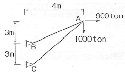
- 3166.7 ton
- 3274.2 ton
- 3368.5 ton
- 3485.4 ton
(정답률: 63%)
9. 아래와 같은 라멘에서 휨모텐트도(B.M.D)를 옳게 나타낸 것은?
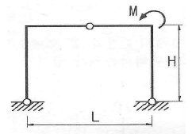
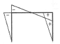
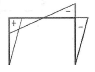
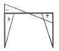
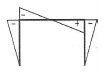
(정답률: 57%)
10. 중앙에 집중하중 P를 받는 그림과 같은 단순보에서 지점 A로부터 ℓ/4인 지점(점 D)의 처짐각(θD과 수직처짐량(δp)은? (단, EI는 일정)
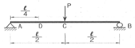
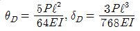
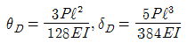
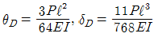
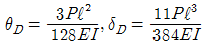
(정답률: 56%)
11. 양단이 고정된 기둥에 축방향력에 의한 좌굴하중 Pδ을 구하면? (E:탄성계수, I:단면2차모멘트 L:기둥의 길이)
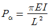
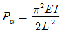
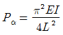
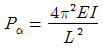
(정답률: 68%)
12. 그림과 같은 부정정보에 집중하중이 작용할 때 A점에 휨모멘트 MA 를 구한 값은?
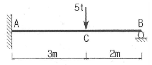
- -5.7t∙m
- -3.6t∙m
- -4.2t∙m
- -2.6t∙m
(정답률: 50%)
13. 탄성계수 E=2.1×106㎏/cm2, 프와송비 v=0.25일 때 전단 탄성계수는?
- 8.4×105㎏/cm2
- 1.1×106㎏/cm2
- 1.7×106㎏/cm2
- 2.1×106㎏/cm2
(정답률: 75%)
14. 아래와 같은 단순보의 지점 A에 모멘트 Ma가 작용할 경우 A점과 B점의 처짐각 비(
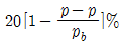
)의 크기는?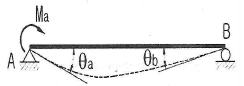
- 1.5
- 2.0
- 2.5
- 3.0
(정답률: 64%)
15. 그림과 같은 단주에 편심하중이 작용할 때 최대 압축응력은?
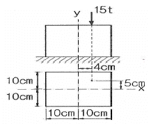
- 138.75㎏/cm2
- 172.65㎏/cm2
- 245.75㎏/cm2
- 317.65㎏/cm2
(정답률: 55%)
16. 아래 그림과 같은 보에서 A지점의 반력은?
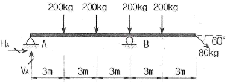
- HA=87.1kg(←), VA=40㎏(↑)
- HA=40kg(←), VA=87.1kg(↑)
- HA=69.3kg(←), VA=87.1㎏(↑)
- HA=40kg(←), VA=69.3㎏(↑)
(정답률: 59%)
17. 단순보 AB위에 그림과 같은 이동하중이 지날 때 A점으로부터 10m 떨어진 C점의 최대 휨모멘트는?
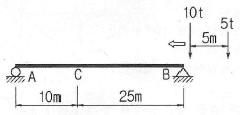
- 85tㆍm
- 95tㆍm
- 100tㆍm
- 115tㆍm
(정답률: 61%)
18. 그림과 같은 단면의 단면 상승모멘트(Ixy) 는?
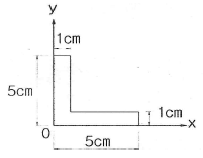
- 7.75㎝4
- 9.25㎝4
- 12.25㎝4
- 15.75㎝4
(정답률: 64%)
19. 그림과 같은 내민보에서 C점의 휨 모멘트가 영(零)이 되게 하기 위해서는 x가 얼마가 되어야 하는가?
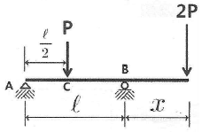
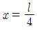
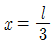
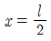
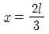
(정답률: 65%)
20. 단면적이 A이고, 단면 2차 모멘트가 I인 단면의 단면 2차 반경(r)은?
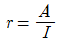
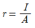
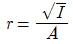
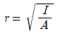
(정답률: 81%)
2과목: 측량학
21. 측점 A에 토털스테이션을 정치하고 B점에 설치한 프리즘을 관측하였다. 이때 기계고 1.7m, 고저각 +15°, 시준고 3.5m 경사거리가 2000m 이었다면, 두 측점의 고처차는?
- 495.838m
- 515.838m
- 535.838m
- 555.838m
(정답률: 58%)
22. 100m2의 정사각형 토지면적을 0.2m2까지 정확하게 계산하기 위한 한 변의 최대허용오차는?
- 2mm
- 4mm
- 5mm
- 10mm
(정답률: 56%)
23. 트래버스 측량의 결과로 위거오차 0.4m, 경거오차 0.3m를 얻었다. 총 측선의 길이가 1500m이었다면 폐합비는?
- 1/2000
- 1/3000
- 1/4000
- 1/5000
(정답률: 53%)
24. 측량에 있어 미지갑을 관측할 경우 나타나는 오차와 관련된 설명으로 틀린 것은?
- 경중률은 분산에 반비례한다.
- 경중률은 반복 관측일 경우 각 관측값 간의 편차를 의미한다.
- 일반적으로 큰 오차가 생길 확률은 작은 오차가 생길 확률보다 매우 작다.
- 표준편차는 각과 거리 같은 1차원의 경우에 대한 정밀도의 척도이다.
(정답률: 42%)
25. 도면에서 곡선에 둘러싸여 있는 부분의 면적을 구하기 가장 적합한 것은?
- 좌표법에 의한 방법
- 배횡거법에 의한 방법
- 삼사법에 의한 방법
- 구적기에 의한 방법
(정답률: 65%)
26. 하천측량에 대한 설명으로 옳지 않은 것은?
- 수위관측소의 위치는 지천의 합류점 및 분류점으로서 수위의 변화가 일어나기 쉬운 곳이 적당하다.
- 하천측량에서 수준측량을 할 때의 거리표는 하천의 중심에 직각 방향으로 설치한다.
- 심천측량은 하천의 수심 및 유수부분의 하저 상황을 조사하고 횡단면도를 제작하는 측량을 말한다.
- 하천측량 시 처음에 할 일은 도상 조사로서 유로 상황, 지역면적, 지형, 토지이용 상황 등을 조사하여야 한다.
(정답률: 70%)
27. 캔트가 C인 노선에서 설계속도와 반지름을 모두 2배로 할 경우, 새로운 캔트 C′는?
- C/2
- C/4
- 2C
- 4C
(정답률: 67%)
28. 그림과 같은 수준환에서 직접수준측량에 의하여 표와 같은 결과를 얻었다. D점의 표고는? (단, A점의 표고는 20m, 경중률은 동일)
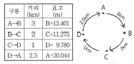
- 6.877m
- 8.327m
- 9.749m
- 10.586m
(정답률: 47%)
29. 지형측량에서 등고선의 성질에 대한 설명으로 옳지 않은 것은?
- 등고선은 절대 교차하지 않는다.
- 등고선은 지표의 최대 경사선 방향과 직교한다.
- 동일 등고선 상에 있는 모든 점은 같은 높이이다.
- 등고선간의 최단거리의 방향은 그 지표면의 최대 경사의 방향을 가리킨다.
(정답률: 73%)
30. 지오이드(geoid)에 대한 설명 중 옳지 않은 것은?
- 평균해수면을 육지까지 연장한 가상적인 곡면을 지오이드라 하며 이것은 지구타원체와 일치한다.
- 지오이드는 중력장의 동포텐셜면으로 볼 수 있다.
- 실제로 지오이드면은 굴곡이 심하므로 측지측량의 기준으로 채택하기 어렵다.
- 지구타원체의 법선과 지오이드의 법선 간의 차이를 연직선 편차라 한다.
(정답률: 57%)
31. 노선측량으로 곡선을 설치할 때에 교각(I) 60°, 외선 길이(E) 30m로 단곡선을 설치할 경우 곡선반지름(R)은?
- 103.7m
- 120.7m
- 150.9m
- 193.9m
(정답률: 59%)
32. 홍수 때 급히 유속을 측정하기에 가장 알맞은 것은?
- 봉부자
- 이중부자
- 수중부자
- 표면부자
(정답률: 72%)
33. 트래버스 측량의 각 관측방법 중 방위각법에 대한 설명으로 틀린 것은?
- 진북을 기준으로 어느 측선까지 시계방향으로 측정하는 방법이다.
- 험준하고 복잡한 지역에서는 적합하지 않다.
- 각이 독립적으로 관측되므로 오차 발생 시, 개별 각의 오차는 이후의 측량에 영향이 없다.
- 각 관측값의 계산과 제도가 편리하고 신속히 관측할 수 있다.
(정답률: 62%)
34. 삼각측량과 삼변측량에 대한 설명으로 틀린 것은?
- 삼변측량은 변 길이를 관측하여 삼각점의 위치를 구하는 측량이다.
- 삼각측량의 삼각망 중 가장 정확도가 높은 망은 사변형삼각망이다.
- 삼각점의 선점 시 기계나 측표가동요할 수 있는 습지나 하상은 피한다.
- 삼각점의 등급을 정하는 주된 목적은 표석설치를 편리하게 하기 위함이다.
(정답률: 56%)
35. 수준측량의 부정오차에 해당되는 것은?
- 기포의 순간 이동에 의한 오차
- 기계의 불완전 조정에 의한 오차
- 지구곡률에 의한 오차
- 빛의 굴절에 의한 오차
(정답률: 49%)
36. 촬영고도 3000m에서 초점거리 153mm의 카메라를 사용하여 고도 600m의 평지를 촬영할 경우의 사진축척은?
- 1/14865
- 1/15686
- 1/16766
- 1/17568
(정답률: 58%)
37. 표고 300m의 지역(800km2)을 촬영고도 3300m에서 초점거리 152mm의 카메라로 촬영했을 때 필요한 사진 매수는? (단, 사진크기 23㎝ × 23㎝, 종중복도 60%, 횡중복도 30%, 안전율 30%임.)
- 139매
- 140매
- 181매
- 281매
(정답률: 44%)
38. GNSS 측량에 대한 설명으로 틀린 것은?
- 다양한 항법위성을 이용한 3차원 측위방법으로 GPS, GLONASS, Galileo 등이 있다.
- VRS 측위는 수신기 1대를 이용한 절대 측위 방법이다.
- 지구질량중심을 원점으로 하는 3차원 직교좌표체계를 사용한다.
- 정지측량, 신속정지측량, 이동측량 등으로 측위방법을 구분할 수 있다.
(정답률: 59%)
39. 노선측량에 관한 설명으로 옳은 것은?
- 일반적으로 단곡선 설치 시 가장 많이 이용하는 방법은 지거법이다.
- 곡률이 곡선길이에 비례하는 곡선을 클로소이드 곡선이라 한다.
- 완화곡선의 접선은 시점에서 원호에, 종점에서 직선에 접한다.
- 완화곡선의 반지름은 종점에서 무한대이고 시점에서는 원곡선의 반지름이 된다.
(정답률: 48%)
40. 지형측량의 순서로 옳은 것은?
- 측량계획 - 골조측량 - 측량원도작성 - 세부측량
- 측량계획 - 세부측량 - 측량윈도작성 - 골조측량
- 측량계획 - 측량윈도작성 - 골조측량 - 세부측량
- 측량계획 - 골조측량 - 세부측량- 측량윈도작성
(정답률: 60%)
3과목: 수리학 및 수문학
41. 미소진폭파(small-ampitude Wave)이론을 가정할때, 일정 수심 h의 해역을 전파하는 파장 L, 파고H, 주기 T의 파랑에 대한 설명으로 틀린 것은?
- h/L이 0.⑤보다 작을 때, 천해파로 정의한다.
- h/L이 1.0보다 클 때, 심해파로 정의한다.
- 분산관계식은 L,h 및 T 사이의 관계를 나타낸다.
- 파랑의 에너지는 H2에 비례한다.
(정답률: 40%)
42. 개수로에서 단면적이 일정할 때 수리학적으로 유리한 단면에 해당되지 않는 것은? (단, H: 수심, Rh: 동수반경, ℓ: 측면의 길이. B: 수면폭, P: 윤변, Θ: 측면의 경사)
- H를 반지름으로 하는 반원에 외접하는 직사각형 단면
- Rh가 최대 또는 P가 최소인 단면
- H=B/2이고 Rh=B/2인 직사각형 단면
- ℓ=B/2, Rh=H/2, Θ=60° 사다리꼴 단면
(정답률: 42%)
43. 밀도가 p인 유체가 일정한 유속 Vo로 수평방향으로 흐르고 있다. 이 유체 속에 지름 d, 길이 ℓ인 원주가 그림과 같이 놓였을 때 원주에 작용되는 항력(抗力)을 구하는 공식은? (단, CD는 항력계수)(오류 신고가 접수된 문제입니다. 반드시 정답과 해설을 확인하시기 바랍니다.)
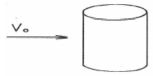
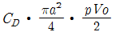
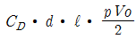
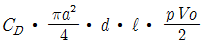
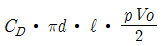
(정답률: 58%)
44. 그림과 같이 정수 중에 있는 판에 작용하는 전수압을 계산하는 식은?
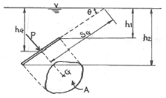
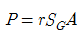
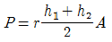
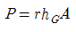
(정답률: 52%)
45. 정상류의 흐름에 대한 설명으로 옳은 것은?
- 흐름특성이 시간에 따라 변하지 않는 흐름이다.
- 흐름특성이 공간에 따라 변하지 않는 흐름이다.
- 흐름특성이 단면에 관계없이 동일한 흐름이다.
- 흐름특성이 시간에 따라 일정한 비율로 변하는 흐름이다.
(정답률: 67%)
46. 지름이 4㎝인 원형관 속에 물이 흐르고 있다. 관로 길이 1.0m 구간에서 압력강하가 0.1N/m2이었다면 관벽의 마찰응력은?
- 0.001N/m2
- 0.002N/m2
- 0.01N/m2
- 0.02N/m2
(정답률: 26%)
47. 그림에서 배수구의 면적이 5cm2일 때 물통에 작용하는 힘은? (단, 물의 높이는 유지되고 손실은 무시한다.)
- 1N
- 10N
- 100N
- 102N
(정답률: 43%)
48. 지하수의 투수계수에 영향을 주는 인자로 거리가 먼 것은?
- 토양의 평균입정
- 지하수의 단위중량
- 지하수의 점성계수
- 토양의 단위중량
(정답률: 66%)
49. 두께가 10m인 피압대수층에서 우물을 통해 양수한 결과, 50m 및 100m 떨어진 두 지점에서 수면 강하가 각각 20m 및 10m로 관측되었다. 정상상태를 가정할 때 우물의 양수량은? (단, 두수계수는 0.3m/hr)
- 7.6×10-2m3/s
- 6,0×10-3m3/s
- 9.4m3/s
- 21.6m3/s
(정답률: 47%)
50. 폭이 넓은 하천에서 수심이 2m 이고 경사가 1/200인 흐름의 소류력(tractive force)은?
- 98N/m2
- 49N/m2
- 196N/m2
- 294N/m2
(정답률: 45%)
51. 다음 중에서 차원이 다른 것은?
- 증발량
- 침투율
- 강우강도
- 유출량
(정답률: 41%)
52. Thiessen 다각형에서 각각의 면적이 20㎢, 30㎢, 50㎢ 이고, 이에 대응하는 강우량이 각각 40㎜, 30㎜, 20㎜ 일 때, 이 지역의 면적평균 강우량은?
- 25㎜
- 27㎜
- 30㎜
- 32㎜
(정답률: 60%)
53. 관수로 흐름에서 난류에 대한 설명으로 옳은 것은?
- 마찰손실계수는 레이놀즈수만 알면 구할 수 있다.
- 관벽 조도가 유속에 주는 영향은 층류일 때보다 작다.
- 관성력의 점성력에 대한 비율이 층류의 경우보다 크다.
- 에너지 손실은 주로 난류효과보다 유체의 점성 때문에 발생한다.
(정답률: 52%)
54. 수면 높이차가 항상 20m인 두 수조가 지름 30㎝, 길이 500m, 마찰손실계수가 0.03인 수평관으로 연결되었다면 관 내의 유속은? (단, 마찰, 단면 급확대 및 급축소에 따른 손실을 고려한다.)
- 2.76m/s
- 2.04m/s
- 2.19m/s
- 2.34m/s
(정답률: 46%)
55. 폭 3.5m, 수심 0.4m인 직사각형 수로의 Francis 공식에 의한 유량은? (단, 접근유속을 무시하고 양단수축이다.)(오류 신고가 접수된 문제입니다. 반드시 정답과 해설을 확인하시기 바랍니다.)
- 1.59m3/s
- 2.04m3/s
- 2.19m3/s
- 2.34m3/s
(정답률: 47%)
56. 수심 H에 위치한 작은 오리피스(onifice)에서 물이 분출할 때 일어나는 손실수두(△h)의 계산식으로 틀린 것은? (단, Va는 오리피스에서 측정된 유속이며 Cg는 유속계수이다.)
(정답률: 36%)
57. 개수로 흐름에 대한 설명으로 틀린 것은?
- 한계류 상태에서는 수심의 크기가 속도수두의 2배가 된다.
- 유량이 일정할 때 상류에서는 수심이 작아질수록 유속이 커진다.
- 비에너지는 수평기준면을 기준으로 한 단위무게의 유수가 가진 에너지를 말한다.
- 흐름이 사류에서 상류로 바뀔 때에는 도수와 함께 큰 에너지 손실을 동반한다.
(정답률: 48%)
58. 강우량자료를 분석하는 방법 중 이중누가곡선법에 대한 설명으로 옳은 것은?
- 평균강수량을 산정하기 위하여 사용한다.
- 강수의 지속기간을 구하기 위하여 사용한다.
- 결측자료를 보완하기 위하여 사용한다.
- 강수량자료의 일관성을 검증하기 위하여 사용한다.
(정답률: 67%)
59. 면적 10㎢인 저수지의 수면으로부터 2m 위에서 측정된 대기의 평균온도가 25℃ 상대습도가 65%, 풍속이 4m/s 일 때 증발률이 1.44㎜/day 이었다면 저수지 수면에서 일증발량은?
- 9360m3/day
- 3600m3/day
- 7200m3/day
- 14400m3/day
(정답률: 56%)
60. 차원계를 [MLT]에서 [FLT]로 변환할 때 사용하는 식으로 옳은 것은?
- [M] = [LFT]
- [M] = [L-1FT2]
- [M] = [LFT2]〕
- [M] = [L2FT]
(정답률: 62%)
4과목: 철근콘크리트 및 강구조
61. 활화중 20kN/m, 고정하중 30kN/m를 지지하는 지간 8m의 단순보에서 계수모멘트(Mu) 는?
- 512kN/m
- 544kN/m
- 576kN/m
- 6⑤kN/m
(정답률: 55%)
62. As=3600mm2, As′=1200mm2로 배근된 그림과 같은 복철근 보의 탄성처짐이 12mm라 할 때 5년 후 저속하중에 의해 유발되는 추가 장기처짐은 얼마인가?
- 36mm
- 18mm
- 12mm
- 6mm
(정답률: 55%)
63. 순단면이 볼트이 구멍 하나를 제외한 단면(즉, A-B-C 단면)과 같도록 피치(s)를 결정하면? (단, 구멍의 직경은 22㎜이다.)
- 114.9㎜
- 90.6㎜
- 66.3㎜
- 50㎜
(정답률: 62%)
64. 프레스트레스의 손실 원인 중 프리스트레스 도입후 시간이 경과함에 따라서 생기는 것은 어느 것인가?
- 콘크리트의 탄성수축
- 콘크리트의 크리프
- PS 강재와 쉬스의 마찰
- 정착단의 활동
(정답률: 59%)
65. 아래의 표와 같은 조건의 경량콘크리트를 사용할경우 경량 콘크리트계수(λ)로 옳은 것은?
- 0.72
- 0.75
- 0.79
- 0.85
(정답률: 50%)
66. 옹벽의 설계 및 해석에 대한 설명으로 틀린 것은?
- 옹벽 저판의 설계는 슬래브의 설계방법 규정에 따라 수행하여야 한다.
- 앞 부벽식 옹벽에서 앞 부벽은 직사각형 보로 설계한다.
- 부벽식 옹벽의 전면벽은 3변 지지된 2방향 슬래브로 설계할 수 있다.
- 옹벽은 상재하중, 뒷채움 흙의 중량, 옹벽의 자중및 옹벽에 작용하는 토압, 필요에 따라서 수압에 도 견디도록 설계하여야 한다.
(정답률: 44%)
67. 유효깊이(d)가 910㎜인 아래 그림과 같은 단철근T형보의 설계휨강도(øMn)를 구하면? (단, 인장철근량(Aa)은 7652mm2, fck=21MPa, fy=3500MPa, 인장지배단면으로 ø0.85, 경간은 3040㎜이다.)(오류 신고가 접수된 문제입니다. 반드시 정답과 해설을 확인하시기 바랍니다.)
- 1803kN·m
- 1845kN·m
- 1883kN·m
- 1981kN·m
(정답률: 48%)
68. 아래 그림과 같은 단철근 직사각형보에서 최외단 인장철근의 순인장변형률 는? (단, As=2028mm2, fck=35MPa, fy=400MPa)
- 0.00432
- 0.00648
- 0.00863
- 0.00934
(정답률: 48%)
69. 폭(b)이 250㎜이고, 전체높이(h)가 500㎜인 직사각형 철근콘크리트 보의 단면에 균열을 일으키는 비틀림모멘트 Tcr는 약 얼마인가? (단, fck=28MPa이다.)
- 9.8KN·m
- 11.3KN·m
- 12.5KN·m
- 18.4KN·m
(정답률: 28%)
70. 그림과 같은 복철근 보의 유효깊이(d)는? (단, 철근 1개의 단면적은 250mm2이다.)
- 730㎜
- 740㎜
- 760㎜
- 780㎜
(정답률: 49%)
71. 계수전단력(Vu이 콘크리트에 의한 설계진단(øVC)의 1/2을 초과하는 철근콘크리트 휨부재에는 최소 전단철근을 배치하도록 규정하고 있다. 다음 중 이 규정에서 제외되는 경우에 대한 설명으로 틀린 것은?
- 슬래브와 기초판
- 전체 깊이가 400㎜이하인 보
- I 형보, T형보에서 그 깊이가 플랜지 두께의 2.5배 또는 복부폭의 1/2중 큰 값 이하인 보
- 교대 벽체 및 날개벽, 옹벽의 벽체, 암거 등과 같이 휨이 주거동인 판 부재
(정답률: 54%)
72. 그림과 같은 맞대기 용접의 용접부에 발생하는 인장 응력은?
- 100MPa
- 150MPa
- 200MPa
- 220MPa
(정답률: 66%)
73. 그림과 같은 포스트텐션 보에서 마찰에 의한 B점의 프리스트레스 감소량(ΔP)의 크기는? (단, 긴장단에서 긴장재의 긴장력(Ppj)=1000kN, 근사식을 사용하며, 곡률마찰계수(up) = 0.3/rad, 파상마찰계수(K)=0.004/m)
- 54.68kN
- 81.23kN
- 118.17kN
- 141.74kN
(정답률: 27%)
74. 이형 철근의 경착길에 대한 설명으로 틀린 것은? (단, db= 철근의 공청지름)
- 표준갈고리가 있는 인장 이형철근: 10db 이상, 또한 200㎜ 이상
- 인장 이형철근 : 300㎜ 이상
- 압축 이형철근 : 200㎜ 이상
- 확대머리 인장 이형철근 : 8db 이상, 또한 150㎜ 이상
(정답률: 54%)
75. 1방향 슬래브에 대한 설명으로 틀린 것은?
- 1방향 슬래브의 두께는 최소 80㎜ 이상으로 하여야한다.
- 4번에 의해 지지되는 2방향 슬래브 중에서 단변에 대한 장변의 비가 2배를 넘으면 1방향 슬래브로서 해석한다.
- 슬래브의 정포멘트 철근 및 부모멘트 철근의 2배 이하이어야 하고, 또한 300㎜ 이하 하여야 한다.
- 슬래브의 정모멘트 철근 및 부모멘트 철근의 중심 간격은 위험단면을 제외한 단면에서는 슬래브 두께의 3배 이하이어야 하고, 또한 450㎜ 이하로 하여야 한다.
(정답률: 45%)
76. 그림과 같이 단면의 중심에 PS강선이 배치된 부재에 자중을 포함한 계수하중(w) 30kN/m가 작용한다. 부재의 연단에 인장응력이 발생하지 않으려면 PS강선에 도입되어야 할 긴장력(P)은 최소 얼마 이상인가?
- 20⑤kN
- 2025kN
- 2045kN
- 2065kN
(정답률: 64%)
77. 철근콘크리트 구조물에서 연속-휨부재의 모멘트재분배를 하는 방법에 대한 다음 설명 중 틀린 것은?
- 근사해법에 의하여 휨모멘트를 계산한 경우에는 연속 휨부재의 모멘트 재분배를 할 수 없다.
- 휨모멘트를 감소시킬 단면에서 최외단 인장철근의 순인장변형률
 가 0.0075 이상인 경우에만 가능하다.
가 0.0075 이상인 경우에만 가능하다. - 경간내의 단면에 대한 휨모멘트의 계산은 수정된부모멘트를 사용하여야 한다.
- 재분배량은 산정된 부모멘트의
 이다.
이다.
(정답률: 45%)
78. 다음과 같은 띠철근 단주 단면의 공칭 축하중 강도(Pn)는? (단, 종방향 철근(Ast) = 4-D29=2570mm2, fck =21MPa, fy=400MPa)
- 3331.7kN
- 3070.5kN
- 2499.3kN
- 2187.2kN
(정답률: 50%)
79. 리벳으로 연결된 부재에서 리벳이 상ㆍ하 두 부분으로 절단되었다면 그 원인은?
- 연결부의 인장파괴
- 리벳의 압축파괴
- 연결부의 지압파괴
- 리벳의 전단파괴
(정답률: 58%)
80. 강도설계법에 대한 기본가정 중 옳지 않은 것은?
- 철근 및 콘크리트의 변형률은 중립축으로부터의 거리 비례한다.
- 콘크리트의 인장강도는 휨계산에서 무시한다.
- 압축 측 연단에서 콘크리트의 극한변형률은 0.003으로 가정한다.
- 항복강도 fy이하에서 철근의 응력은 그 변형률에 관계없이 fy와같다고 가정한다.
(정답률: 44%)
5과목: 토질 및 기초
81. 기초 폭 4m인 연속기초에서 기초면에 작용하는 합력의 연직성분 10t이고 편심거리가 0.4m일 때, 기초지반에 작용하는 최대 압력은?
- 2t/m2
- 4t/m2
- 6t/m2
- 8t/m2
(정답률: 39%)
82. 분사현상에 대한 안건율이 2.5 이상이 되기 위해서 는 Δh를 최대 얼마 이하로 하여야 하는가? (단, 간극률(n)=50%)
- 7.5㎝
- 8.9㎝
- 13.2㎝
- 16.5㎝
(정답률: 55%)
83. 10m 두께의 점토층이 10년 만에 90% 압밀이 된다면, 40m 두께가 동일한 점토층이 90% 압밀에 도달하는 소요되는 기간은?
- 16년
- 80년
- 160년
- 240년
(정답률: 61%)
84. 테르쟈기(Terzaghi)의 얕은 기초에 대한 지지력공식 qu=acNc+βr1BNr+r2DfNq에 대한 설명으로 틀린 것은?
- 계수 α,β를 형상계수라 하며 기초의 모양에 따라 결정한다.
- 기초의 깊이 Df가 클수록 극한지지력도 이와 더불어 커진다고 볼 수 있다.
- Nc, Nr, Nq는 지지력계수라 하는데 내부마찰각과 점착력에 의해서 정해진다.
- r1, r2는 흙의 단위 중량이며 지하수위 아래에서는 수중단위 중량을 써야 한다.
(정답률: 52%)
85. 아래 그림과 같은 지표면에 2개의 집중하중이 작용하고 있다. 3t의 집중하중 작용점 하부 2m지점 A에서의 연직하중의 증가량은 약 얼마인가? (단, 영향계수는 소수점이하 넷째자리까지 구하여 계산하시오.)
- 0.37t/m2
- 0.89t/m2
- 1,42t/m2
- 1.94t/m2
(정답률: 35%)
86. 다음 중 연약점토지반 개량공법이 아닌 것은?
- Preloading 공법
- Sand drain 공법
- Paper drain공법
- Vibro Floatation 공법
(정답률: 63%)
87. 간극비(e)와 간극률(n, %)의 관계를 옳게 나타낸 것은?
(정답률: 59%)
88. 옹벽배면의 지표면 경사가 수평이고, 옹벽배면 벽체의 기울기가 연적인 벽체에서 옹벽과 뒷세움 흙사의 벽면마찰각(δ)을 무시할 경우, Rankine토압과 Coulomb 토양의 크기를 비교하면?
- Rankine토압이 Coulomb토압 보다 크다.
- Coulomb토압이 Rankine토압 보다 크다.
- Rankine토압과 Coulomb토압의 크기는 항상 같다.
- 수동토압은 Rankine토압 더 크고, 수동토압은 Coulomb토압의 크기는 항상 같다.
(정답률: 54%)
89. 샘플러(sampler)의 외경이 6cm, 내경이 5.5㎝ 일 때, 면식비(Ar)는?
- 8.3%
- 9.0%
- 16%
- 19%
(정답률: 53%)
90. 아래 그림에서 투수계수 K=4.8×10-3㎝/sec일 때 Darcy 유출속도(v)와 실제 물의 (침투속도, Vs)는?
- v=3.4×10-4㎝/sec, Vs=5.6×10-4㎝/sec
- v=3.4×10-4㎝/sec, Vs=9.4×10-4㎝/sec
- v=5.8×10-4㎝/sec, Vs=10.8×10-4㎝/sec
- v=5.8×10-4㎝/sec, Vs=13.2×10-4㎝/sec
(정답률: 53%)
91. 수직방향의 투수계수가 4.5×10-6m/sec 이고, 수평방향의 투수계수가 1.6×10-6m/sec인 균질하고 비등방(比等方)인 흙댐의 유선망을 그린 결과 유로(流路)수가 4개이고 등수두선의 간격수가 18개이다. 단위길이(m)당 침투수량은?(단, 상하류 수면차 H=18m)(오류 신고가 접수된 문제입니다. 반드시 정답과 해설을 확인하시기 바랍니다.)
- 1.1×10-7m3/sec
- 2.3×10-7m3/sec
- 2.3×10-6m3/sec
- 1.5×10-6m3/sec
(정답률: 44%)
92. 사면안정 해석방법에 대한 설명으로 틀린 것은?
- 일체법은 활동면의 위에 있는 흙덩어리를 하나의 물체로 보고 해석하는 방법이다.
- 절편법은 활동면 위에 있는 흙을 몇 개의 절편으로 분할하여 해석하는 방법이다.
- 마찰원방법은 점착력과 마찰각을 동시에 갖고 있는 균질한 지반에 적용된다.
- 절편법은 흙이 균질하지 않아도 적용이 가능하지만, 흙속에 간극수압이 있을 경우 적용이 불가능하다.
(정답률: 55%)
93. 흙의 다짐에 대한 설명으로 틀린 것은?
- 조립토는 세립토보다 최대 건조단위 중량이 커진다.
- 습윤측 다짐을 하면 흙 구조가 면모구조가 된다.
- 최적 함수비로 다질 때 최대 건조단위중량이 된다.
- 동일한 다짐 에너지에 대해서는 건조측이 습윤측 보다 더 큰 강도를 보인다.
(정답률: 50%)
94. 다음 중 시료재취에 대한 설명으로 틀린 것은?
- 오거보링(Auger Boring)은 흐트러지지 않은 시료를 채취하는데 적합하다.
- 교란된 흙은 자연상태의 흙보다 전단강도가 작다.
- 액성한계 및 소성한계 시험에서는 교란시료를 사용하여도 괜찮다.
- 입도분석시험에서는 교란시료를 사용하여도 괜찮다.
(정답률: 45%)
95. 성토나 기초지반에 있어 특히 점성토 압밀완료 후추가 성토 시 단기 안정문제를 검토하고자 하는 경우 적용되는 시험법은?
- 비압밀 비배수시험
- 압밀 비배수시험
- 압밀 배수시험
- 일축 압축시험
(정답률: 46%)
96. 어떤 군은 점토층을 깊이 7m까지 연직 절토하였다. 이 점토층의 일축압축강도가 1.4㎏/cm2, 흙의 단위중량이 2t/m3라 하면 파괴의 안전율은?
- 0.5
- 1.0
- 1.5
- 2.0
(정답률: 42%)
97. 도로 연장이 3㎞ 건설 구간에서 7개 지점의 시료를 재취하여 다음과 같은 CBR을 구하였다. 이때의 설계 CBR은 얼마인가?
- 4
- 5
- 6
- 7
(정답률: 40%)
98. 자연상태의 모래지반을 다져 emin에 이르도록 했다면 이 지반의 상대밀도는?
- 0%
- 50%
- 75%
- 100%
(정답률: 54%)
99. 어떤 지반의 미소한 흙요소에 최대 및 최소 주응력이 각각 1kg/cm2 및 0.6㎏/cm2 일 때, 최소주응력면과 60°를 이루는 면상의 전단응력은?
- 0.10kg/cm2
- 0.17kg/cm2
- 0.20kg/cm2
- 0.27kg/cm2
(정답률: 48%)
100. Sand drain공법의 지배 영역에 관한 Barron의 정사각형 배치에서 사주(Sand plie)의 간격을 d, 유효원의 지름을 de라 할 때 de를 구하는 식으로 옳은 것은?
- de=1.13
- de=1.⑤
- de=1.03
- de=1.50
(정답률: 49%)
6과목: 상하수도공학
101. 활성탄흡착 공정에 대한 설명으로 옳지 않은 것은?
- 활성탄은 비표면적이 높은 다공성의 탄소질 입자로 형상에 따라 입성활성탄과 분말활성탄으로 구분된다.
- 분말활성탄의 흡착능력이 떨어지면 재생공정을 통해 재활용한다.
- 활성탄흡착을 통해 소수성의 유기물질을 제거할수 있다.
- 모래여과 공정 전단에 활성탄흡착 공정을 두게 되면, 탁도 부하가 높아져서 활성탄 흡착효율이 떨어지거나 역세척을 자주 해야 할 필요가 있다.
(정답률: 63%)
102. 인구 30만의 도시에 급수계획을 하고자한다. 계획 1인 1일 최대급수량을 350L로 하고 계획급수 보급률을 80%라고 할 때 계획 1일 평균 급수량은? (단, 이 도시는 중소도시로 계획, 첨두율은 1.5로 가정한다.)
- 126,000m3/day
- 84,000m3/day
- 73,500m3/day
- 56,000m3/day
(정답률: 37%)
103. 배수면적 2km2인 유역 내 강우의 하수관거 유입 시간이 6분, 유출계수가 0.70일 때 하수관거내 유속이 2m/s인 1㎞ 길이의 하수관에서 유출되는 우수량은? (단, 강우강도 = 의 단위:[분])
- 0.3m3/s
- 2.6.m3/s
- 34.6m3/s
- 43.9m3/s
(정답률: 58%)
104. 하수도계획의 목표연도는 원칙적으로 몇 년으로 설정하는가?
- 5년
- 10년
- 15년
- 20년
(정답률: 65%)
1⑤. 취수보의 취수구에서의 표준 유입속도는?
- 0.3 ~0.6 m/s
- 0.4 ~0.8 m/s
- 0.5 ~1.0 m/s
- 0.6 ~1.2 m/s
(정답률: 52%)
106. 활성슬러지법과 비교하여 생물막법의 특징으로 옳지 않은 것은?
- 운전조작이 간단하다.
- 다량의 슬러지 유출에 따른 처리수 수질악화가 발생하지 않는다.
- 반응조를 다단화하여 반응효율과 처리안정성 향상이 도모된다.
- 생물종 분포가 단순하여 처리효율을 높일 수 있다.
(정답률: 48%)
107. 하수관거의 설계기준에 대한 설명으로 틀린 것은?
- 경사는 상류에서 크게 하고 하류로 갈수록 감소시켜야 한다.
- 유속은 하류로 갈수록 작게 하여야 한다.
- 오수관거의 최소관경은 200㎜를 표준으로 한다.
- 관거의 최소 흙두께는 원칙적으로 1m로 한다.
(정답률: 52%)
108. 펌프대수 결정을 위한 일반적인 고려사항에 대한 설명으로 옳지 않은 것은?
- 건설비를 절약하기 위해 예비는 가능한 대수를 적게하고 소용량으로 한다.
- 펌프의 설치태수는 유지관리상 가능한 적게하고 동일 용량의 것으로 한다.
- 펌프는 가능한 최고효율점 부근에서 운전하도록 대수 및 용량을 정한다.
- 펌프는 용량이 작을수록 효율이 높으므로 가능한 소용량의 것으로 한다.
(정답률: 55%)
109. 물의 맛·냄새의 제거 방법으로 식물성 냄새, 생선 비린내, 황화수소냄새, 부패한 냄새의 제거에 효과가 있지만, 곰팡이 냄새 제거에는 효과가 없으며, 페놀류는 분해할 수 있지만, 약품냄새 중에는 아민류와 같이 냄새를 강하게 할 수도 있으므로 주의가 필요한 처리 방법은?
- 폭기방법
- 염소처리법
- 오존처리법
- 활성탄처리법
(정답률: 52%)
110. 상수도 계획에서 계획 년차 결정에 있어서 일반적으로 고려해야 할 사항으로 틀린 것은?
- 장비 및 시설물의 내구년한
- 시설확장 시 난이도와 위치
- 도시발전 상황과 물사용량
- 도시급수지역의 전염병 발생상황
(정답률: 58%)
111. Ripple's method에 의하여 저수지 용량을 결정하려고 할 때 그림에서 최대 갈수량을 대비한 저수개시 지점은? (단, 와 평행)
- ㉠시점
- ㉡시점
- ㉢시점
- ㉣시점
(정답률: 52%)
112. 양수량이 8m3/min, 전양정이 4m, 회전수1160rpm인 펌프의 비교회전도는?
- 316
- 985
- 1160
- 1436
(정답률: 63%)
113. 합류식과 분류식에 대한 설명으로 옳지 않은 것은?
- 합류식의 경우 관경이 커지기 때문에 2계통인 분류식보다 건설비용이 많이 든다.
- 분류식의 경우 오수와 우수를 별개의 관로로 배제하기 때문에 오수의 배제계획이 합리적이 된다.
- 분류식의 경우 관거내 퇴적은 적으나 수세효과는 기대할 수 없다.
- 합류식의 경우 일정량 이상이 되면 우천 시 오수가 원류한다.
(정답률: 63%)
114. 상수도 배수관에 사용하는 관 종류와 특징으로 옳지 않은 것은?
- 경질폴리엄화비닐(PVC)관은 내구성이 크고 유기용제, 열 및 자외선에 강하다
- 덕타일주철관은 강도가 커서 충격에 강하나 비교적 무겁다.
- 강관은 내압 및 충격에 강하나 부식에 약하며 처짐이 크다
- 스테인리스강관은 강도가 크지만 다른 금속과의 절연처리가 필요하다.
(정답률: 57%)
115. 다음 중 하수 고도처리의 주요 처리대상 물질에 해당 되는 것은?
- 질소, 인
- 유기물
- 소득부산물
- 미생물
(정답률: 66%)
116. 완속여과자와 비교할 때, 급속여과지에 대한 설명으로 옳지 않은 것은?
- 유입수가 고탁도인 경우에 적합하다.
- 세균처리에 있어 확실성이 적다.
- 유지관리비가 적게 들고 특별한 관리기술이 필요치 않다.
- 대규모처리에 적합하다.
(정답률: 55%)
117. 하수처리·재이용계획의 계획오수량에 대한 설명 중 옳지 않은 것은?
- 계획1일최대오수량은 1인1일최대오수량에 계획인구를 곱한 후, 공장폐수량, 지하수량 및 기타 배수량을 더한 것으로 본다.
- 계획오수량은 생활오수량, 공장폐수량, 지하수량으로 구분한다.
- 지하수량은 1인1일최대오수량의 10~20%로 한다.
- 계획시간최대오수량은 계획1일 평균오수량의 1시간당 수량의 2~3배를 표준으로 한다
(정답률: 56%)
118. 펌프의 토출량이 0.94m3/min이고, 흡입구의 유속이 2m/s라 가정할 때 펌프의 흡입구경은?
- 100mm
- 200mm
- 250mm
- 300mm
(정답률: 40%)
119. 하수처리장 유입수의 SS농도는 200mg/L이다. 1차 침전지에서 30% 정도가 제거되고 2차침전지에서 85%의 제거효율을 갖고 있다. 하루 처리용량이 3000m3/day일 때 방류되는 총 SS량은?
- 6300㎏/day
- 6300㎎/day
- 63㎏/day
- 2800g/day
(정답률: 48%)
120. 도수거에 대한 설명으로 틀린 것은?
- 개거나 암거인 경우에는 대개 30~50m 간격으로 시공조인트를 겸한 신축조인트를 설치한다.
- 개수로의 평균유속 공식 Manning공식을 주로 사용한다.
- 도수거에서 평균유속의 최대한도는 5m/s로 한다.
- 도수거의 최소유속은 0.3m/s로 한다.
(정답률: 67%)
강선에 작용하는 힘은 히크의 법칙에 따라 F = kx가 성립합니다. 여기서 k는 강선의 탄성계수, x는 강선의 변형량입니다.
강선의 변형량 x는 하중이 작용한 위치에서의 변형량과, 그 이하의 모든 구간에서의 변형량의 합으로 구할 수 있습니다. 하중이 작용한 위치에서의 변형량은 다음과 같이 구할 수 있습니다.
x = (하중 × 길이) / (단면적 × 탄성계수)
= (200 × 100) / (1 × 2.0×10^6)
= 0.01 cm
이하의 모든 구간에서의 변형량은 강선의 길이가 100cm이므로, 동선의 길이가 200cm인 것을 감안하여 다음과 같이 구할 수 있습니다.
x = (하중 × 길이) / (단면적 × 탄성계수)
= (100 × 100) / (1 × 2.0×10^6) + (100 × 200) / (1 × 1.0×10^6)
= 0.15 cm
따라서 강선에 작용하는 힘은 다음과 같습니다.
F = kx
= 2.0×10^6 × 0.01
= 20 kgf
= 133.3 N
= 133.3 kg
따라서 정답은 "133.3㎏"입니다.